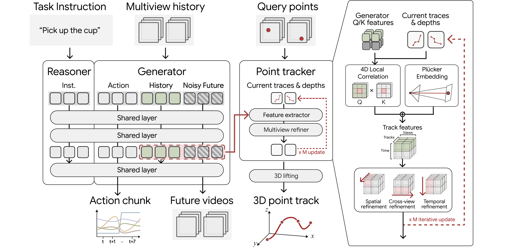
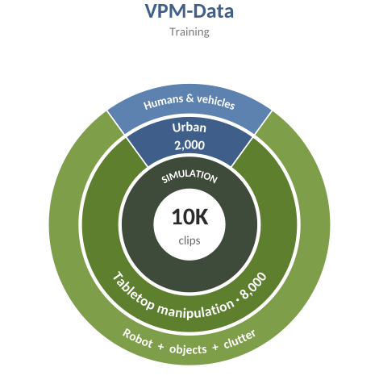
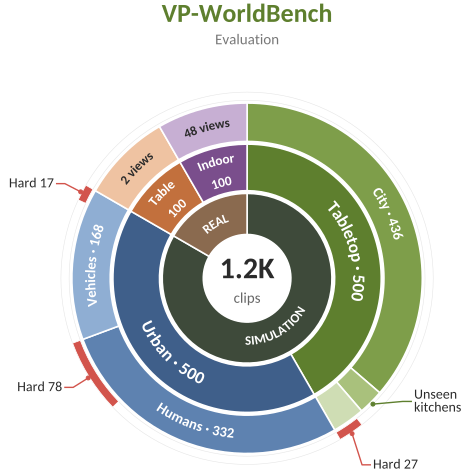

Video-Point Model (VPM): Learning the 4D World through Point Trajectory Forecasting
Multi-view world models can render every camera convincingly while the cameras disagree about how the scene moves in 3D. VPM (Video-Point Model) jointly forecasts future videos from arbitrary viewpoints and the 3D trajectories of persistent scene points, given posed multi-view histories and a language instruction. Learning where points will move improves both video fidelity and 3D consistency, and the same point supervision also improves robot action learning.
Plausible videos are not coherent 3D motion
Reliable multi-view forecasting requires videos from different cameras to describe the same evolving 3D scene. Visual plausibility alone does not establish whether a forecast does.
Prompt: “The van slows down and makes a right turn at the intersection into the street on its right.”
Each view can look right on its own
Forecasts from arbitrary viewpoints should depict the same future event despite differences in perspective and visibility. Per-view realism does not check that.
Idea: forecast persistent 3D point trajectories together with the videos. Each trajectory follows one physical point across every camera and over time, so supervising it ties appearance changes in all views to a shared description of 3D motion.
![Overview figure with three panels: (a) VP-WorldBench and VPM-Data with robot table manipulation and urban dynamics clips shown as 3D point trajectories; (b) the Video-Point Model taking multi-view video histories, camera parameters and a language instruction and producing future multi-view videos, robot actions and persistent 3D point trajectories; (c) benchmark results where VPM (V+T) has the lowest FVD and highest 3D accuracy, and bar charts showing track supervision lowers FVD on Robot and General splits.](assets/img/teaser-figure.jpg)
Method
VPM builds on the Mixture-of-Transformers backbone of Cosmos 3. It adds camera-conditioned multi-view processing and a trajectory head that is trained jointly with video generation, so point-motion supervision shapes the representation used for visual prediction.

VPM-Data & VP-WorldBench
VPM-Data provides 10K simulated training clips that pair synchronized multi-view videos with persistent 3D point trajectories, camera geometry, depth, visibility masks and captions. VP-WorldBench evaluates forecasting on 1.2K held-out clips across simulated tabletop and urban scenes and real-world recordings.


Benchmark clips with ground-truth 3D point tracks
A Fourier GR-1 T2 pick-and-place episode rendered in Unreal Engine 5 with clutter and distractors. Ground-truth 3D points on the robot's arms and hands and on the manipulated object are projected into each view.
256 persistent surface points on the target, colored by height and projected with each camera's per-frame pose. visiblein view but occluded (from rendered depth)
Caption: “A man with short dark hair, wearing a light zip-up jacket and pants, walks steadily along a tree-shaded brick sidewalk past a row of townhouses…”
Points stay attached to the van when trees and poles hide it, and cam01 pans away from the target for 35 frames before re-acquiring it. visiblein view but occluded
Caption: “A white Mercedes Sprinter cargo van drives down the center of a wide double-yellow-lined city street, passing an intersection…”
One of 100 teleoperated episodes (exo and ego views). Ground-truth 3D tracks on the robot surface come from recorded robot states.
Ten-second sequences of people moving, handling objects and interacting with furniture, captured by 48 synchronized cameras. Points are tracked in 2D across all views and triangulated per frame; only depth-consistent tracks are kept.
Kinematics-grounded 3D points for real robot videos
For DROID and HRDexDB episodes, points are sampled once on the robot's CAD meshes and moved with the recorded joint states through forward kinematics, so every point keeps its physical identity across time and views. An episode is kept only if its projected CAD mask agrees with a SAM2 robot mask (recall ≥ 0.9).
Columns: raw frame / projected CAD mask / gripper points with trajectories. Rows: two exterior cameras.
Columns: raw frame / projected CAD mask / gripper points with trajectories. Rows: two exterior cameras.
Columns: raw frame / projected CAD mask / gripper points with trajectories. Rows: two exterior cameras.
Columns: raw frame / point overlay / point tracks on the robot arm and hand. Rows: two cameras.
Results
VPM (V) is trained on multi-view videos only; VPM (V+T) adds 3D point-trajectory supervision under the same training budget, so the comparison isolates the effect of point supervision. For a fair comparison, no method receives camera parameters for future frames.
VP-WorldBench
Baselines are fine-tuned on the same data; single-view models generate each requested view independently. FVD and PSNR measure video fidelity; MEt3R and δ3Davg measure geometric consistency, where δ3Davg is the average fraction of 3D tracks, extracted from generated videos with MVTracker, that land within depth-adaptive thresholds of the ground truth.
The radar charts require JavaScript.
Point supervision improves robot action learning
The action-enabled VPM (V+T+A) is evaluated on LIBERO, LIBERO-Plus and RoboCasa in simulation, and on three real pick-and-place tasks with a Franka Panda arm in the DROID setup (two exterior cameras and one wrist camera, 24 trials per task).
Success rate (%)
Methods without a reported number for a benchmark are left out of that panel. Real-world scores give 0.5 for a successful pick-and-place that touches the pile of boxes.
Real-robot rollouts
Each task places the object and its goal on opposite sides of a pile of boxes, so no single camera shows the whole task and the arm must cross the pile without touching it. Clips play at 2× speed.
Zero-shot manipulation from predicted 3D point tracks
Generated videos follow the predicted 3D point tracks
The trajectory head predicts point motion from the generator's intermediate features, and the remaining blocks turn those features into future frames. Generated robot hands, vehicles and pedestrians therefore follow the predicted trajectories, and because each trajectory follows a single physical point, the views stay consistent with one another.
Two views (ego and exo) generated jointly from five context frames. The clip cycles through the predicted 3D point traces, the generated video, and both overlaid; the query points are ground-truth points at frame 0.
Two exterior views with predicted point trajectories. Frames outlined in red are generated; the others are context.
Four of the 48 synchronized camera views in the home-like capture space, with point tracks on the person colored by height.
Four camera-controlled views generated jointly from five context frames (81 frames at 15 fps), with the predicted traces shown alone and drawn on the video they were read from.
Four camera-controlled views generated jointly from five context frames (97 frames at 15 fps), with the predicted traces shown alone and drawn on the video they were read from.